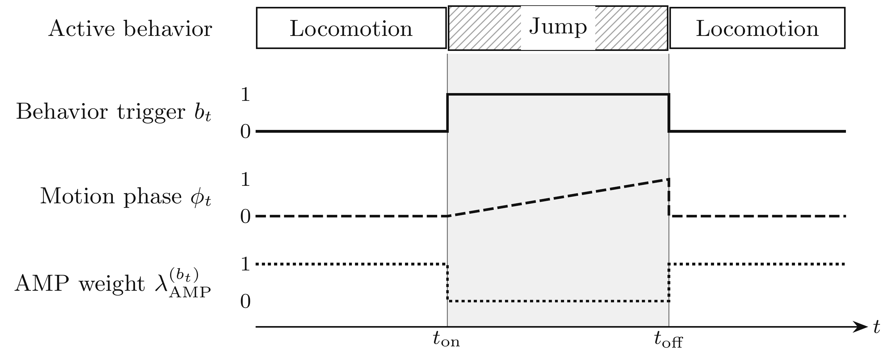

Learning and Composing Stylistic Humanoid Behaviors
This project explores how reference motions can be used to learn and compose task-driven behaviors on a humanoid robot within a single policy. Building on Adversarial Motion Priors and DeepMimic, I developed a reinforcement learning framework in IsaacLab that combines adversarial imitation, explicit motion tracking, and task-specific objectives.
The framework supports continuous task commands, discrete behavior triggers, and motion-phase conditioning, allowing transitions to be learned between steady-state motions (e.g., locomotion) and dynamically triggered motions.
Methodology
A single policy is conditioned on proprioceptive observations, continuous task commands, discrete behavior signals, and a motion phase.
\[ a_t \sim \pi_\theta(\cdot \mid s_t, c_t, b_t, \phi_t) \]
Different motions receive different weighted rewards.
\[ r_t = r_{\text{task}}^{(b_t)} + \lambda_{\text{track}}^{(b_t)} r_{\text{track}} + \lambda_{\text{AMP}}^{(b_t)} r_{\text{AMP}}\]
Behaviors are triggered mid episode, then return to steady-state.

Framework
A manifest defines which motion clips to sample from and their respective environment configuration.
motions:
walk_to_goal:
file: data/locomotion/walk.npz
sample_prob: 0.55
amp: 2.0
commands:
goal_x: [-5.0, 5.0]
goal_y: [-5.0, 5.0]
zero_command_prob: 0.25
rewards:
progress:
weight: 3.0
scale: 30.0
target_hit:
weight: 1.0
scale: 0.5
termination:
unhealthy:
jump:
file: data/jump/standing_broad_jump.npz
sample_prob: 0.35
trigger: binary_key_0
amp: 0.0
random_start: true
rewards:
heading_motion_tracking:
weight: 20.0
dof_scale: 0.5
key_body_scale: 0.5
action_rate_l2:
weight: 0.5
scale: 1.0
joint_acc:
weight: 0.1
scale: 1.0e-4
termination:
unhealthy:
deviation_from_motion:
threshold: 3.0Experiments
The exact configurations can be found here.